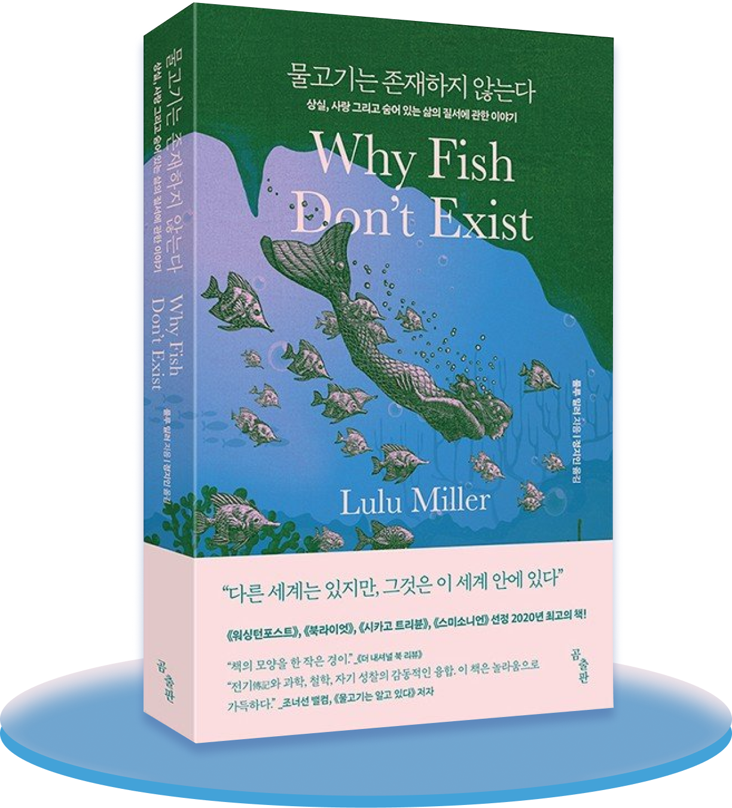

당신이 믿고 있는 사실들은,
정말 진실일까요?
이상하게 들리겠지만,
『물고기는 존재하지 않는다』는아무런 정보도 없이
보았을 때 가장 놀랍고 경이롭습니다.
당신이 책장을 덮으며 누릴 온전한 기쁨을 해치지 않는 선에서, 몇 자
적어봅니다.
우선 이 책은 소설이 아닙니다. 에세이나 다큐멘터리에 근접합니다. 실제
있었던 사건과 기록들을 기반으로 서술되었습니다.
저자이자 주인공인 룰루 밀러는
삶에서 어떤 가치와 의미도 느끼지 못합니다.
대부분의 우울증 환자가 그러하듯이요.
우연히 ‘데이비드 스타 조던’에 관심을 갖게 되고,
그가 어떻게 해서 그토록 힘든 인생의 시련을
(여러 번이나!) 극복하고 성공할 수 있었는지
답을 찾고자 합니다.
조던은 아내와 자식들을 잃었고, 평생을 바쳐 수집한 물고기 표본을 번개로
인한 화재와 샌프란시스코 대지진으로 두 차례 잃었습니다.
30년의 노력이 한순간에 수포로 돌아갔다면
대부분의 사람은 그저 좌절하기 마련입니다.
그런데 그는 불굴의 의지로 다시 일어나
도전하고, 또 도전해서 위대한 업적을 이뤄냈습니다.

물고기는 존재하지 않는다
- 출판사 : 곰출판
“가장 좋은 방법은 자신이 보고 있는 것이 무엇인지
전혀 모른다는 사실을 매 순간, 인정하는 것이다.”
전혀 모른다는 사실을 매 순간, 인정하는 것이다.”
“결코 승리하지 못할 거라는 그 모든 경고에도 불구하고, 그로 하여금
혼돈을 향해 계속 바늘을 찔러 넣도록 한 것이 무엇인지 알고 싶었다. 그가
우연히 어떤 비법을, 무정한 세상에서 희망을 찾을 수 있는 어떤 처방을
발견한게 아닐까 궁금했다.”
...
“어쩌면 그는 무언가 핵심적인 비결을 찾아냈을지도 몰랐다. 아무 약속도 존재하지 않는 세계에서 희망을 품는 비결, 가장 암울한 날에도 계속 앞으로 나아가는 비결, 신앙 없이도 믿음을 갖는 비결 말이다.”
...
“어쩌면 그는 무언가 핵심적인 비결을 찾아냈을지도 몰랐다. 아무 약속도 존재하지 않는 세계에서 희망을 품는 비결, 가장 암울한 날에도 계속 앞으로 나아가는 비결, 신앙 없이도 믿음을 갖는 비결 말이다.”
어떻게 이런 일이 가능했을까요?
인생의 실패와 역경, 정체를 극복하는 장엄한 힘은 대체 어디에서 비롯된 것일까요.
그의 성향이 특별해서일까요?
아니면 삶의 누군가의 영향을 받았기 때문일까요.
저자는 그의 어린시절부터 사망까지의
생애를 절박하게 추적하던 중 놀라운 진실을 알게 됩니다.
이 책은 어쩌면 평범한 전기나 다큐에세이 같이 보이지만,
실제로는 우리가 알지도, 인지하지도 못했던
이 세계에 대해 다룹니다.
인생의 의미에 관하여,
우리를 둘러싼 이 세계의 질서와 진실에 대하여
독특하고 매력적인 방식으로 풀어낸 책입니다.
물고기는 정말 존재하지 않는 걸까요?
인생의 실패와 역경, 정체를 극복하는 장엄한 힘은 대체 어디에서 비롯된 것일까요.
그의 성향이 특별해서일까요?
아니면 삶의 누군가의 영향을 받았기 때문일까요.
저자는 그의 어린시절부터 사망까지의
생애를 절박하게 추적하던 중 놀라운 진실을 알게 됩니다.
이 책은 어쩌면 평범한 전기나 다큐에세이 같이 보이지만,
실제로는 우리가 알지도, 인지하지도 못했던
이 세계에 대해 다룹니다.
인생의 의미에 관하여,
우리를 둘러싼 이 세계의 질서와 진실에 대하여
독특하고 매력적인 방식으로 풀어낸 책입니다.
물고기는 정말 존재하지 않는 걸까요?
Editior
혜영
<쇼팽 녹턴 20번>
이 곡은 쇼팽 사후에 발견된 피아노 연주곡입니다. 어딘지 모르게 외롭고,
쓸쓸한 분위기가 특징입니다. 이 섬세한 연주곡을 듣고 있으면, 어쩐지
저자가 무기력함을 극복하고 마침내 삶의 의미를 깨닫는 여정을 곱씹게
됩니다.